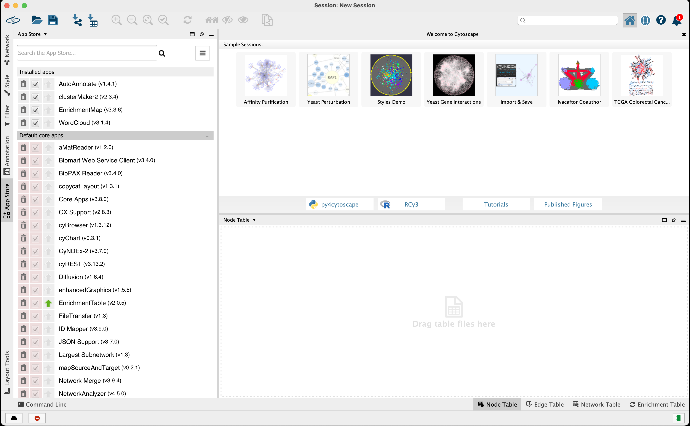

Visualize
- Table of Contents
I. Goals
Previously, we passed a rank list of differentially expressed genes between platelets of healthy donors and breast cancer patients along with a gene set database to the Gene Set Enrichment Analysis (GSEA) software in hopes of identifying significantly altered pathways. We could have simply ended there and examined our GSEA reports for those pathways in the list that peaked our scientific interest. In many instances, however, the results of GSEA are voluminous in part because of a high degree of redundancy amongst pathways. Can we reduce this redundancy and provide a more meaningful, interactive means to reason over the results?
In this workflow step, we describe Enrichment Map (EM), a visual tool that simplifies the display of a list of gene sets with a large degree of redundancy. By then end of this discussion you should:
- Understand how an Enrichment Map can simplify enrichment results
- Learn how to create and tune an Enrichment Map
- Be able to generate a figure describing the landscape of altered pathways
II. Background
EM was originally described by Merico et al. (Merico 2010) as an aid in the interpretation of gene sets emerging from enrichment analyses. The motivation for this tool is the growing number of gene sets and gene annotation detail being made available, which leads to large numbers of gene sets emerging from enrichment analyses. Even with stringent criteria, it is not uncommon for analyses to generate hundreds or thousands of pathways, making results difficult to interpret on whole. To illustrate the value of EM, let us return to our analysis of alterations in pathways of platelets by Best et al..
A long list of pathways
We used GSEA to distill gene sets enriched in the underlying differences in RNA abundance between platelets from healthy donors (HD) and individuals diagnosed with breast cancer (BrCa). Our rationale for applying enrichment analysis was that we would much rather reason at the pathway-level than the gene-level. Figure 1 shows a section of the GSEA report and Table 1 shows an excerpt of the actual enrichment report for BrCa.
Figure 1. GSEA report for BrCa and HD phenotypes.
Table 1. Enrichment report for BrCa (na_pos phenotype)
| NAME | SIZE | ES | NES | NOM p-val | FDR q-val | FWER p-val |
|---|---|---|---|---|---|---|
| PID_FAK_PATHWAY | 48 | 0.8144367 | 2.2033582 | 0.0 | 0.0 | 0.0 |
| THROMBOXANE A2 RECEPTOR SIGNALING | 39 | 0.84532094 | 2.175933 | 0.0 | 0.0 | 0.0 |
| SIGNALING EVENTS MEDIATED BY FOCAL ADHESION KINASE | 48 | 0.8144367 | 2.16101 | 0.0 | 0.0 | 0.0 |
| … | … | … | … | … | … | … |
| IL5%NETPATH%IL5 IL5 | 49 | 0.7718686 | 2.0658088 | 0.0 | 0.0 | 0.0 |
| … | … | … | … | … | … | … |
Notice that even under fairly stringent criteria (i.e. p-value < 1%), there are a still 578 gene sets that are deemed significantly enriched in BrCa platelets and 394 in HD. Furthermore, our GSEA report declares that 8 191 genes were used as input in our ranked list. Have we simply kicked the can down the road and traded a long list of ~8 200 genes for a long list of ~1 000 gene sets?
Data reduction
Ideally, we want a simple way to reduce the size of the data from an enrichment analysis while retaining, to the best of our ability, the amount of meaningful information. To this end, many approaches have set their sights on reducing the amount of redundancy amongst gene sets.
Hierachical
Many enrichment analyses use the Gene Ontology (Ashburner 2000) which is hierarchically organized. In this case, redundancy can be reduced by merging gene sets that are children of a parent cluster with broader scope. These and other similar approaches rely on variations of the same statistical test for enrichment. Importantly, these approaches do not apply to gene sets without a clearly defined hierarchy, for example, transcriptional regulator target genes. What we desire is a versatile method able to manage non-hierarchical gene sets that emerge from analysis methods, regardless of nature of the underlying enrichment test used (Khatri 2012).
Enrichment Map
EM is a visualization analysis tool that organizes gene sets into an information-rich similarity network. The true power of Enrichment Map is that it is a visual display method that reduces complexity by grouping similar gene sets as defined by the number of overlapping genes. These clusters can then be annotated with a representative label gleaned from the characteristics of the individual gene sets (Figure 2).
Gene sets are represented as nodes whose radius is proportional to the number of genes. Edges indicate nodes with shared genes, where the thickness of the line is proportional to the degree of overlap. Finally, EM can use node color to represent other dimensions of the data, for example, gene sets enriched in different classes.
Figure 2. Rationale of the Enrichment Map. Genes within gene sets or pathways can overlap and often describe nearly identical biological concepts. An Enrichment Map reduces the redundancy in gene sets by creating a graph where nodes are gene sets, node size correlates with gene set size, and edge widths indicate the number of shared genes. Note that gene set 'd' does not share any genes with the others. Highly similar gene sets can be labelled with a single, over-arching label.
The approach is modular in that it is compatible with any statistical test or gene set source. Enrichment Map shines when dealing with a collection of gene sets with a large degree of redundancy.
Preview of EM software
Figure 3 provides a tour of the EM app in the Cytoscape software.
Figure 3. Tour of the Enrichment Map app. The Enrichment Map app is accessed through Cytoscape. (A) The main window displays the gene sets (circles) and their similarity (edges). Gene set size is proportional to node radius and overlap is indicated by edge thickness. Gene sets associated with BrCa and HD classes are shaded red and blue, respectively. (B) A Control Panel is where settings for Cytoscape and each app appear. (C) The Table Panel displays data for each node and edge along with expression heatmaps. Open in new window
It should be immediately apparent from Figure 3 that the Enrichment Map app provides several helpful features including viewing underlying gene expression, grouping similar gene sets and classes/phenotypes differentiated by color.
III. Workflow Step
Below, we describe the process of loading our file dependencies from previous workflow steps (i.e. enrichment reports, expression, phenotypes, ranks) into the Cytoscape desktop software towards generating an Enrichment Map similar to Figure 3. We will then provide some tips on how to navigate, tune and interpret the EM in an effort to facilitate new scientific insight.
Software requirements
- Install Java version 8
- Cytoscape: version 3 or higher
- Cytoscape is an indispensable tool for network visualization and analysis. The desktop software comes as a base installation and additional capabilities are added in the form of a large ecosystem of plugins or apps. Checkout the Cytoscape User Manual for full description of function and capabilities.
- Cytoscape apps
- Enrichment Map: version 3.1.0
- ClusterMaker2: version 1.2.1
- WordCloud: version 3.1.1
- AutoAnnotate: version 1.2
Loading apps
The base Cytoscape installation will use a collection of apps to generate the Enrichment Map. Apps are loaded into Cytoscape using the built-in App Manager.
From the Cytoscape menu bar, select 'Apps' --> 'App Manager' to bring up an app search panel (Figure 4).

Figure 4. Cytoscape App Manager screen. Search for the app of choice using the Install Apps tab. Open in new window
Search for the app, highlight the correct search result and click Install. If the installation was successful, you should be able to select it by name in the Apps menu bar drop-down. Also, if you bring up the App Manager you should see it as a listing under the Currently Installed tab.
Launch the Enrichment Map app by selecting from the menu bar Apps --> EnrichmentMap (Figure 5). This will launch the Create Enrichment Map dialog where files common to many Enrichment Maps can be loaded or the user can load files on a case-by-case basis (Figure 5, below).

Figure 5. Enrichment Map screen. (Above) The Create Enrichment Map dialog is where we will load our data files and adjust the Enrichment Map settings. (Below) Clicking the '+' button (red box) will enable the panel on the right to 'Load data set from files' for individual Enrichment Maps. Open in new window
Input
Below we provide the dependencies that will be loaded into the Enrichment Map app through the Create Enrichment Map dialog (Figure 6). All of these files were either provided of generated in previous workflow steps.
GMT File
Expression
Enrichments
Ranks
Classes
Analysis
1. Load dependencies
Having obtained the six (6) file dependencies you may now load these into the Create Enrichment Map dialog (Figure 6).

Figure 6. Enrichment Map file load. Shown is the Create Enrichment Map dialog. Load in the file dependencies for Enrichments Pos/Neg, GMT, Ranks, Expression and Classes.
2. Configure
In the Create Enrichment Map dialog (Figure 6), make the following adjustments to the following sections.
- Number of Nodes (gene-set filtering)
- Set
FDR q-value cutoffto 0.0001.- This number is inversely proportional to the stringency for displaying a gene set.
- Smaller number – fewer nodes.
- Set
You will be able to adjust the parameters later on in the
Control Paneltab forEnrichment Map
3. Build
Click Build to generate the EM displayed in Figure 7.
Figure 7. Enrichment Map for gene sets enriched in BrCa versus HD. Nodes coloured red are gene sets enriched in BrCa whereas blue shaded are gene sets enriched in HD. Open in new window.
Take some time to examine main window displaying the network. In particular, in the lower right region of the main window there is a bird’s eye view showing the region displayed in the main view. Let us recap what we are seeing in the main view:
- Node
- Each circle represents a gene set
- Select a node with your mouse and examine the related data in the
Table PaneltabNode Table
- Select a node with your mouse and examine the related data in the
- Size: Number of genes in the gene set
- Colour: Phenotype (class) assignment and enrichment (p-value)
- Each circle represents a gene set
- Edge
- Indicate related gene sets as measured by shared genes
- Select an edge with your mouse and examine the related data in the
Table PaneltabEdge Table
- Select an edge with your mouse and examine the related data in the
- Thickness: Number of genes shared between gene sets
- Indicate related gene sets as measured by shared genes
The Control Panel tab for Enrichment Map shows our currently selected parameters.
- Control Panel
- Increase or decrease the stringency for displaying nodes (
Node Cutoff) and edges (Edge Cutoff (Similarity)) using the sliders. For instance, one can restrict the displayed gene sets to those with very low chance of being a false positive.
- Increase or decrease the stringency for displaying nodes (
- Table Panel
- If you activate the
Heat Maptab as in Figure 7, you will see a depiction of the normalized gene expression values and the samples colored by class. If you click on theNode Table(Figure 8) it should display the information summarized in the graph but displayed in tabular form. Note that if a node in the graph is selected or if there is a search match, only those results will be shown. Click anywhere on the map outside of a node to see the full results.
- If you activate the
You can search the Enrichment Map by keyword using the input text box located at the top-right. For example, searching for ‘IL5%NETPATH%IL5’ highlights the corresponding node in yellow and selects it so you can immediately view data in the
Table Panel.
Figure 8. Table Panel. This panel displays tabular information for gene sets. Highlighted is the IL-5 signal transduction pathway from NetPath. Open in new window.
Output
It is very easy to get overwhelmed by the amount of options, settings and visual information in an Enrichment Map (Figure 7) so now is a good time to pause to reflect back upon our goal: To reduce the complexity in our long list of enriched gene sets from GSEA while maintaining as much useful information. To this end, note the presence of gene set ‘clusters’ as indicated by a very dense group of edges connecting nodes (e.g. Figure 7, top-left in blue). These are gene sets with many shared genes that likely represent very similar processes. Our aim will be to display such clusters as a single node and annotate it with one label that reflects the overarching theme of its constituents (Figure 9).
Figure 9. Preview of Enrichment Map clustering and annotation. On the left, a schematic of an Enrichment Map shows gene sets enriched in two phenotypes (red and blue). Clusters of gene sets will be identified by the Cytoscape app 'Autoannotate' which in turn, will use the 'WordCloud' app to derive a descriptive label for the cluster ('Theme One' and 'Theme Two'). The labels are extracted from the individual metadata associated with the gene sets. Finally, the clusters will be collapsed into single nodes to simplify the view.
Label clusters of similar gene sets
Clusters within the Enrichment Map represent similar biological processes and themes. In order to better summarize the Enrichment map we want to be able to annotate each of these clusters with the main theme associated with it. To do this we use the AutoAnnotate app to help us summarize the network and its themes. AutoAnnotate first clusters the network and then uses WordCloud to calculate the most frequent words present in each cluster node labels in efforts to highlight commonalities between the nodes in the cluster.
i. Separating gene sets in each class
In the main window graph, let us spatially separate the gene sets enriched in each class so that when we go to add labels, they are readily distinguishable.
We will select the BrCa group in red and drag the entire group over to the right separate it from the HD group in blue. To do this, Highlight the class by creating a column filter for nodes with a positive NES:
Control Paneltab forSelect- Click
+to add a filter- Select
Column Filterfrom the drop-down
- Select
Choose column....drop-down- Select
Node:EM1_NES (tep_brca_vs_hd) - Enter range to include only positive values
- Select
- Click
Figure 10 shows the selected nodes in yellow representing the gene sets enriched in BrCa. Drag the entire group to the right of the unselected gene sets.
Figure 10. Separating gene sets enriched in each class. The enriched gene sets in the BrCa class was selected by creating a column filter in the Control Panel tab Select for NES above 0. Open in new window.
ii. AutoAnnotate groups
AutoAnnotate first clusters the network and then uses WordCloud to calculate the most frequent words present in each cluster’s node labels (Figure 10). Launch the dialog by clicking from the toolbar Apps -> AutoAnnotate -> New Annotation Set...
In the Quick Start tab, click Create Annotations to start the annotation process. You should see clusters forming and being annotated in the main window (Figure 11).
Figure 11. AutoAnnotate network. (Above) Sample results using Quick Start. (Below) Advanced tab. Cluster algorithm: Choose from the list of possible clustering algorithms supported by AutoAnnotate including Affinity Propagation, Cluster fuzzifier, Community clustering, Connected Components Clustering, MCL, and SCPS. By default this is set to MCL. Edge weight column: Any numeric edge attribute column can be used as weights in the clustering algorithm. By default this is set to EM_similarity_coeffecient which is a measure of how many genes two nodes have in common. The more genes two nodes have in common the higher the value and therefore the more likely they are to be found in the same cluster. Label Options Label column: Select the column you would like to use to compute the labels for each cluster. By default this is set to the Enrichement Map gene set description column (EM_GS_DESCR) but any string or list of strings can be used to annotate the clusters. Open in new window.
iii. Collapse groups
Figure 11 shows a pretty busy picture; It is natural to gravitate towards large clusters that appear in the enrichment results, however, in this case, size does not indicate importance or strength but rather the amount of database annotation there exist for a particular pathway or process. Single nodes represent processes that are less well known but no less important than the large clusters. In order to remove the bias introduced by redundant pathway annotations it is good to collapse the network, i.e. create a single group node for every cluster whose name is summary annotation calculated for it, in order to more easily see the overall themes present in the enrichment results (Figure 12).
Control Panelselect theAutoAnnotatetab- Click the menu drop-down (button with 3 lines)
- Select
Collapse All

Figure 12. Results of collapsing AutoAnnotate. Note that we have changed the styling to increase the clarity of the text labels and dragged our clusters together. Open in new window.
iv. Expand a group
Let’s reverse the process selectively and drill down into a particular group. Recall our running interest in the IL-5 signal transduction pathway originally curated by NetPath? Well it is hidden inside our clusters. We can recover the view for this gene set (Figure 13).
Searchfor termIL5Control Panelselect theAutoAnnotatetab- Right click the highlighted cluster
- Select
Expand
Figure 13. Selectively expanding the network for a single cluster. Open in new window.
Our expanded cluster shows the constituent pathways that include our IL-5 gene set. The edges indicate shared genes, but to get a better idea of the overlap, let’s look at the overlap in all pairs of gene sets in table format (Figure 14).
- Select the cluster
- Hold Shift + drag mouse over nodes
- Table Panel
- Select
Edge Tabletab
- Select
Figure 14. Showing gene overlap in gene set cluster . The Table Panel tab for Edge Table shows the pair-wise overlap in genes between different gene sets in the cluster (EM1_Overlap_size, EM1_Overlap_genes). href="figure_visualize_em_cluster_uncollapsed_ilgroup.png" target="_blank">Open in new window.
Cytoscape affords the user a great deal of control over styles and layout. There is only so much that can be automated, so it will be up to you to tweak the look of the Enrichment Map to suit your needs. Please refer to the user manual for full description of capabilities.
IV. Interpretation
So what now? Below, we list some helpful tips to aid you in extracting value from an enrichment analysis.
1. Build trust
No algorithm or statistic can replace the experience, expertise and critical eye of you the researcher. The best place to start with a completed EM is to examine it for genes, pathways and themes that would be expected a priori. These are unsurprising results that have either been previously reported or which one could have easily guessed before the analysis was even performed. Do the results pass the sanity test?
As an example, direct your attention to the cluster annotated with the label ‘blood coagulation platelet’ (Hint: Do a text search). This cluster consists of a hierarchy of three gene sets referencing increasingly specific GO terms (Figure 15):
- Hemostasis GO:0007599
- Blood coagulation GO:0007596
- Platelet Activation GO:0030168
Figure 15. Gene ontology relationship for gene set cluster 'blood coagulation platelet activation'. Adapted from QuickGO.
2. Identify novel/interesting groups
This is where the rubber meets the road: The enrichment analysis and EM are evidence that helps you to bridge bodies of knowledge and make new, interesting connections. The discoveries that will nourish a steady-stream of publications and earn the envy of peers is largely up to you.
One simple way to get the creative juices flowing is to try and understand whether there are established connections between certain gene sets/groups and your specific biological context of interest. For example, one can ask whether there is an established connections between cytokine signaling pathways (‘IL-3’, ‘IL-5’, ‘IL-6’), platelets and malignancies.
3. Drill down to gene expression
Perhaps we’ve noticed an interesting pathway not previously reported in our context. One way to build confidence in the result is to simply examine visually whether there is a contrast in expression between classes.
Recall that our p-values for differential gene expression do not provide any information about the magnitude of the expression differences.
One approach to examine expression of a gene set is to focus on the ‘leading edge’ - the subset of genes that contribute to the enrichment analysis enrichment score (ES) (Figure 16).
Figure 16. Leading edge analysis for IL-5 signal transduction pathway. Genes of the gene set that contribute most to the enrichment score - the 'leading edge' - are highlighted in yellow. Open in new window.